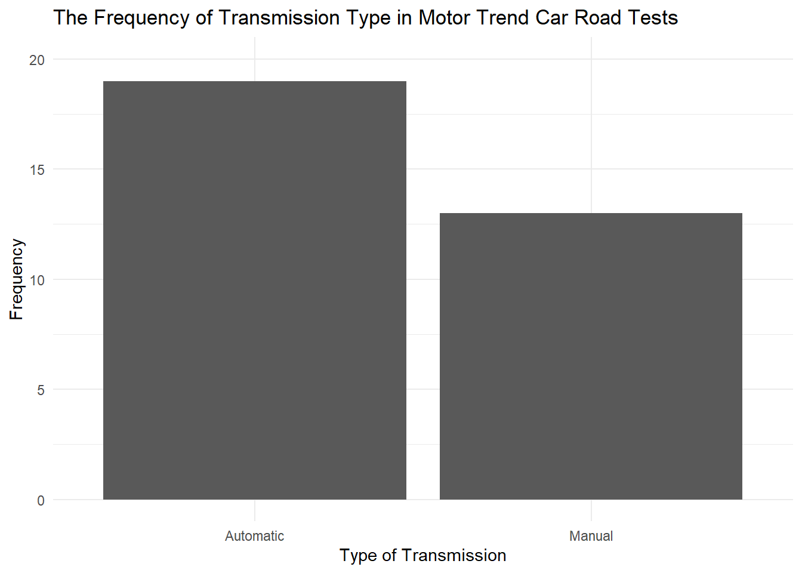
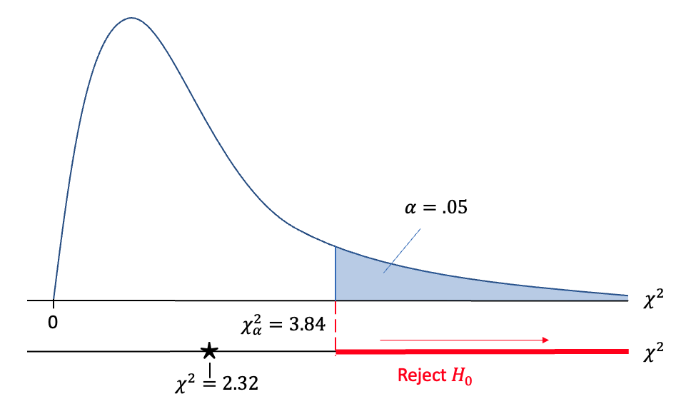

Applying Chi-Square to Categorical Data Tutorial
Introduction
Many of the statistical tests you learn about in psychology research methods focus on continuous outcomes. While many measures capture continuous data, that is not the only way to quantify human behaviour. Imagine you performed an observational study where you coded for whether a baby exhibited one type of behaviour or another. This would represent categorical or nominal data and would not be suitable to use in something like a t-test. In this tutorial, you will learn about applying the Chi-Square test of independence to categorical outcomes.
When analysing categorical data, the most informative summary statistic is the mode. We can calculate the frequency of each level or category in the variable, and the most frequent is our modal value. This means a bar plot is also the most direct way of summarising the data as they are designed to show the frequency of different categories. For example, in the mtcars data set, we can plot the transmission type of cars included in the 1974 edition of Motor Trend magazine. 19 were automatic and 13 were manual, where the automatic cars was the modal category. This shows how we can summarise categorical data.
The Chi-Square (\(\chi^2\)) tests whether there is an association in categorical variables. A one-sample Chi-Square can be applied to two or more categories of a single variable, whereas a cross-tabulation Chi-Square can be applied to two or more categorical variables, each containing two or more levels. We are interested in whether the observed categorical frequency distribution differs to what we would expect assuming there was no association.
In the following tutorial, we will demonstrate how to conduct a one-sample and cross-tabulation Chi-Square test in R. We will first explain the logic and assumptions behind each test, then how you can calculate the test in R and report your findings.
We assume you have a basic understanding of R as we are focusing on the data preparation and analysis steps, rather than explaining the R language, but that you have never performed a Chi-Square test in R before. We also assume that you are familiar with the null hypothesis significance testing framework (NHST) for statistical inference.
To follow this tutorial, you only need the tidyverse collection of packages loaded for wrangling and plotting functions.
library(tidyverse)One-Sample Chi-Square
Overview and assumptions
In the one-sample Chi-Square test, you have a single categorical variable with two or more levels. For the test’s assumptions, the data should also be independent, meaning each participant or case provides just one observation. Chi-Square tests are not designed for repeated measures data. There is an alternative called McNemar’s test that is designed for repeated measures data, but we will not be covering this test here.
We start with observed values which are your data. For example, imagine you conducted an observational study where you recorded whether people passing in the street returned a smile or not. You recorded 25 people who returned a smile and 37 people who did not return a smile. These are your observed values. We compare these to our expected values which is what we would expect if there was equal likelihood of returning a smile or not: 31 and 31.
We then apply null hypothesis significance testing logic to compare your observed values to your expected values. Chi-Square is the test statistic that represents this process. The larger the difference between your observed and expected values, the larger the test statistic and the more likely the test will be statistically significant (assuming the sample size remained the same).
Traditionally, you would check a look-up table for the intersection between your Chi-Square test statistic and the degrees of freedom. For the one-sample Chi-Square, the degrees of freedom are \(k - 1\), where k means the number of categories, which would be 1 in this scenario (2 - 1). If your Chi-Square test statistic is equal to or greater than the critical value for your alpha (traditionally \(\alpha\) = .05), then you would reject the null hypothesis and conclude the test is statistically significant. If your test statistic is smaller than the critical value, then you would not reject the null hypothesis and the test would not be statistically significant.
For a selection of degrees of freedom, the critical values are produced below. For our example, it corresponds to a Chi-Square value of 2.32 (which we will verify shortly). Since we have 1 degrees of freedom, the critical value for our Chi-Square is 3.84. Since our Chi-Square is smaller than the critical value, there is not a statistically significant association at \(\alpha\) = .05.
Chi-Square (\(\chi^2\)) Look-up Table
| df | \(\alpha = .05\) |
|---|---|
| 1 | 3.841 |
| 2 | 5.991 |
| 3 | 7.815 |
| 4 | 9.488 |
| 5 | 11.07 |
| 6 | 12.592 |
| 7 | 14.067 |
| 8 | 15.507 |
| 9 | 16.919 |
| 10 | 18.307 |
Now we have computers and statistics software, we do not need to look at a critical values table, R will directly calculate the p-value for your test statistic and degrees of freedom. You then interpret whether the p-value is smaller or larger than your alpha, and conclude whether the test is statistically significant or not.
Hand calculations
Although we now have computers to do the hard work for us, it is still important to work through the underlying hand calculations - even if it is just once - to appreciate where the values come from. In this part, we will work through the smiling observation data and how we can calculate the one-sample Chi-Square by hand. Here is our data:
| Values | S | NS |
|---|---|---|
| Observed | 25 | 37 |
And if we add on a column showing the total number of participants, adding all the numbers in the different conditions together, (i.e. 25 + 37 = 62), then we get:
| Values | S | NS | Total |
|---|---|---|---|
| Observed | 25 | 37 | 62 |
Now the formula for the chi-square is:
\[\chi^2 = \sum\frac{(Observed - Expected)^2}{Expected}\]
The Expected values for each condition, in a one-sample chi-square assuming a uniform (equal) distribution is calculated by \(N \times \frac{1}{k}\) where \(k\) is the number of conditions and \(N\) is the total number of participants. This can also be written more straightforward as \(N/k\). That means that in our example the expected value in each condition would be:
\[Expected = \frac{N}{k} = \frac{62}{2} = 31\]
Let’s now add those Expected values to our table which looks like:
| Values | S | NS | Total |
|---|---|---|---|
| Observed | 25 | 37 | 62 |
| Expected | 31 | 31 | 62 |
We now have our data, let’s start putting it into the formula, which we said was:
\[\chi^2 = \sum\frac{(Observed - Expected)^2}{Expected}\]
Which really means:
\[\chi^2 = \frac{(Observed_{A} - Expected_{A})^2}{Expected_{A}} + \frac{(Observed_{B} - Expected_{B})^2}{Expected_{B}}\]
So
\[\chi^2 = \frac{(25 - 31)^2}{31}+\frac{(37 - 31)^2}{31}\]
Which becomes:
\[\chi^2 = \frac{(-6)^2}{31} + \frac{(6)^2}{31}\]
And if we now square the top halves (the numerators):
\[\chi^2 = \frac{36}{31} + \frac{36}{31}\]
Then divide the top half by the bottom half for each condition:
\[\chi^2 = {1.1612903}+{1.1612903}\] And finally add them altogether
\[\chi^2 = 2.3225806\]
So we find that \(\chi^2 = 2.3225806\)
The degrees of freedom in this test is \(k - 1\) and given that we have 2 conditions:
\[df = k - 1\] \[df = 2 - 1\] \[df = 1\]
Applying the NHST framework, there is a Chi-Square distribution which depends on the value for \(k\). Isolating the distribution for \(k = 2\) and assuming \(\alpha = .05\), we can summarise the procedure with the figure below. Using \(\alpha = .05\) creates a critical value of 3.84, but our observed test statistic of 2.32 does not exceed that threshold, meaning the test is not statistically significant and we cannot reject the null hypothesis.

If you compare these values to the overview, they match up and demonstrate the underlying hand calculations. If you check back at the look-up table, our conclusion is still the association is still not statistically significant.
Calculating in R
Now you understand the logic behind the test, we can demonstrate how you perform the one-sample Chi-Square in R.
There are two main ways you will have data to work with. The first is raw values of observations, such as when you have a complete data set and one column represents a categorical variable with two or more levels. The second is when you have a table of frequencies for each level of your categorical variable. To apply the Chi-Square, you first need a frequency table to work with, so we will demonstrate the wrangling process in case you are starting with raw values.
Wrangling a frequency table
If you are working with raw data, you first need to arrange your categories into a frequency table. Let us create some mock data to work from using the smile example.
Smiles <- data.frame(ID = 1:62,
response = rep(c("Smile", "No Smile"), # Our two categories
c(25, 37))) # Repeat smile 25 times, no smile 37 times
head(Smiles) ID response
1 1 Smile
2 2 Smile
3 3 Smile
4 4 Smile
5 5 Smile
6 6 SmileWe created 62 rows of data, 25 for participants who returned a smile, and 37 for those who did not return a smile. The next step is to calculate the frequency of each category.
We can easily calculate the frequency by isolating the response variable for our categories, and applying the table() function from the base R set of functions. This function creates a contingency table of all the variables you provide, which will scale nicely once we turn to the cross-tabulation Chi-Square later. With one variable, it will just count how many observations of each category there are.
Smiles_frequency <- Smiles %>%
select(response) %>%
table()
Smiles_frequency.
No Smile Smile
37 25 Entering data as a frequency table
Alternatively, you might immediately start with a frequency table if you do not have access to the raw data. In this case, you can directly enter the values for each category. There are different ways of entering data, but the most direct is entering values as a matrix and adding informative names.
In the code below, we first save a matrix with the frequencies for each category. The other argument controls how to organise the matrix like how many columns it has.
Smiles_frequency <- matrix(c(25, 37), # Frequency values for each category
ncol = 2, # 2 columns, so the data are not in one column
byrow = TRUE) # Enter the values one row at a time
# For clarity, add names to each column
colnames(Smiles_frequency) <- c("Smile", "No Smile")
Smiles_frequency Smile No Smile
[1,] 25 37Chi-Square function in R
No matter which method you used to enter your data, it will be in the same form and ready to analyse. R comes with a built-in function for applying the Chi-Square test called chisq.test(). All you need to do is enter your frequency object you created before.
chisq.test(Smiles_frequency)
Chi-squared test for given probabilities
data: Smiles_frequency
X-squared = 2.3226, df = 1, p-value = 0.1275To break down the output, the function confirms the data source you used. You get the Chi-Square value, degrees of freedom, and the p-value. Reassuringly, all these values correspond with what we reported in the overview. There is not a statistically significant association here and we cannot reject the null hypothesis. If you want to communicate the results in a report, the standardised APA format is:
\(\chi^2\) (1) = 2.32, p = .128.
For any analysis, data visualisation is important and for a Chi-Square, a bar plot is the most appropriate choice to show the frequency of values across different categories. For this data set, you can use ggplot2 to create a bar plot showing the frequency of each smile observation.
Smiles %>%
ggplot(aes(x = response)) +
geom_bar() +
theme_minimal() +
scale_y_continuous(limits = c(0,40), breaks = seq(0, 40, 5), name = "Frequency") +
scale_x_discrete(name = "Type of Facial Response") +
labs(title = "The Frequency of Whether Participants Returned a Smile or Not.")
There is also extra information available in the function which can be helpful for a final assumption we have not covered so far. To work as intended, the expected values must be higher than 5. If the expected value is less than 5 for one of the cells/categories, you will receive a warning that the results may not be accurate. There are different guidelines around how many cells with fewer than 5 expected values are too few, but one recommendation is at least 80% of the cells should have 5 or more expected values. For example, we can check the expected values for the current example:
chisq.test(Smiles_frequency)$expected[1] 31 31To demonstrate what the warning looks like, we will need to amend the data set so there are fewer than 5 expected values.
Smiles_frequency <- matrix(c(2, 7), # Smaller number of observed values
ncol = 2,
byrow = TRUE)
colnames(Smiles_frequency) <- c("Smile", "No Smile")
chisq.test(Smiles_frequency)Warning in chisq.test(Smiles_frequency): Chi-squared approximation may be
incorrect
Chi-squared test for given probabilities
data: Smiles_frequency
X-squared = 2.7778, df = 1, p-value = 0.09558chisq.test(Smiles_frequency)$expectedWarning in chisq.test(Smiles_frequency): Chi-squared approximation may be
incorrect[1] 4.5 4.5This shows how when you have fewer than 5 expected values, you receive the warning “Chi-squared approximation may be incorrect”. This highlights how the test statistic and p-value may be inaccurate when there is too little data to work with.
When it comes to the cross-tabulation Chi-Square, there is an alternative test designed for small samples called Fisher’s exact test, but you need at least 2 rows and columns for it to work. Therefore, for the one-sample Chi-Square, it essentially presents a guide for the minimal sample size to work with. We will return to Fisher’s exact test as an alternative at the end of the next section.
Cross-Tabulation Chi-Square
Overview and assumptions
Now you have worked through the one-sample Chi-Square, it is time to demonstrate how it scales up. In the cross-tabulation Chi-Square test, you have a two or more categorical variables, each with two or more levels. For the test’s assumptions, the data should be independent, meaning each participant or case provides just one observation.
For this example, we will add a variable to our observational study. Imagine in addition to recording whether people passing in the street returned a smile or not, we also recorded the weather on testing days. We recorded whether it was rainy or sunny, and we want to know whether there is an association between the weather and people’s facial responses. This represents a 2x2 design as we have two categorical variables, each with two levels.
For our observed values, on a rainy day we recorded 25 people returning a smile and 37 people not returning a smile. On a sunny day, we then recorded 50 people returning a smile and 33 not returning a smile. The cross-tabulation Chi-Square still works by comparing our observed values to our expected values. For this example, they are 32.07, 29.93, 42.93, and 40.07 respectively. Calculating the expected values are a little more involved than the one-sample Chi-Square, so we will verify the values later in the tutorial and focus on the overall logic for now.
We then apply null hypothesis significance testing logic to compare your observed values to your expected values. Chi-Square is the test statistic that represents this process. Traditionally, you would check a look-up table for the intersection between your Chi-Square test statistic and the degrees of freedom.
For the cross-tabulation Chi-Square, the degrees of freedom are:
\[df = (Rows - 1) \times (Columns - 1)\]
Rows are the number of categories for one variable and columns for the number of categories in your other variable. In this example, the value for the degrees of freedom is 1 (2-1 x 2-1 = 1). If your Chi-Square test statistic is equal to or greater than the critical value for your alpha (traditionally \(\alpha\) = .05), then you would reject the null hypothesis and conclude the test is statistically significant. If your test statistic is smaller than the critical value, then you would not reject the null hypothesis and the test would not be statistically significant.
For our example, it corresponds to a Chi-Square value of 5.64 (which we will verify shortly). Since we have 1 degrees of freedom, the critical value for our Chi-Square is 3.84 and we have reproduced a truncated version of the Chi-Square look-up table below. Since our Chi-Square is larger than the critical value, there is a statistically significant association at \(\alpha\) = .05 and we can reject the null hypothesis.
Chi-Square (\(\chi^2\)) Look-up Table
| df | \(\alpha = .05\) |
|---|---|
| 1 | 3.841 |
| 2 | 5.991 |
| 3 | 7.815 |
| 4 | 9.488 |
| 5 | 11.07 |
Hand calculations
Here is our data:
| Weather | No Smile | Smile |
|---|---|---|
| Rainy | 37 | 25 |
| Sunny | 33 | 50 |
We are going to need to know the Column Totals and Row Totals and the Total number of participants (N), so lets calculate them add them to our tables:
Rainy Row Total = 37 + 25 = 62
Sunny Row Total = 33 + 50 = 83
No Smile Column Total = 37 + 33 = 70
Smile Total = 25 + 50 = 75
N = 37 + 25 +33 + 50 = 145
And if we add those to our table we see:
| Weather | No Smile | Smile | Totals |
|---|---|---|---|
| Rainy | 37 | 25 | 62 |
| Sunny | 33 | 50 | 83 |
| Totals | 70 | 75 | 145 |
Now the formula for the chi-square is:
\[\chi^2 = \sum\frac{(Observed - Expected)^2}{Expected}\]
The Expected values for each condition, in the cross-tabulation in a few ways but the one we will use here is probably the easiest to use and it is:
\[Expected = \frac{Total_{row} \times Total_{column}}{N_{total}}\]
This is the same as other versions you might have seen such as:
\[Expected = \frac{Total_{row}}{N_{total}} \times \frac{Total_{column}}{N_{total}} \times N_{total}\]
The will both give the same result. So using the first approach we would see that the Expected values are:
For people in the rain that did not smile:
\[Expected_{Rainy-No Smile} = \frac{62 \times 70}{145} = \frac{4340}{145} = 29.9310345\] For people in the rain that did smile:
\[Expected_{Rainy-Smile} = \frac{62 \times 75}{145} = \frac{4650}{145} = 32.0689655\]
For people in the sun that did not smile:
\[Expected_{Sunny-No Smile} = \frac{83 \times 70}{145} = \frac{5810}{145} = 40.0689655\]
For people in the sun that did smile:
\[Expected_{Sunny-Smile} = \frac{83 \times 75}{145} = \frac{6225}{145} = 42.9310345\]
We now have our data, let’s start putting it into the formula, which we said was:
\[\chi^2 = \sum\frac{(Observed - Expected)^2}{Expected}\]
Which really means:
\[\chi^2 = \frac{(Observed_{Rainy-No Smile} - Expected_{Rainy-No Smile})^2}{Expected_{Rainy-No Smile}} + \frac{(Observed_{Rainy-Smile} - Expected_{Rainy-Smile})^2}{Expected_{Rainy-Smile}}\]
\[+ \\ \frac{(Observed_{Sunny-No Smile} - Expected_{Sunny-No Smile})^2}{Expected_{Sunny-No Smile}} + \frac{(Observed_{Sunny-Smile} - Expected_{Sunny-No})^2}{Expected_{Sunny-No}}\]
And if we start putting in the values, becomes:
\[\chi^2 = \frac{(37 - 29.9310345)^2}{29.9310345}+ \frac{(25 - 32.0689655)^2}{32.0689655}+\frac{(33 - 40.0689655)^2}{40.0689655}+\frac{(50 - 42.9310345)^2}{42.9310345}\]
And if we start to tidy those top halves up a little it becomes:
\[\chi^2 = \frac{(7.0689655)^2}{29.9310345}+ \frac{(-7.0689655)^2}{32.0689655}+\frac{(-7.0689655)^2}{40.0689655}+\frac{(7.0689655)^2}{42.9310345}\]
And now we square those top halves to give:
\[\chi^2 = \frac{49.9702735}{29.9310345} + \frac{49.9702735}{32.0689655} + \frac{49.9702735}{40.0689655} + \frac{49.9702735}{42.9310345} \]
And then divide the top halves by the bottom halves
\[\chi^2 = {1.6695137} + {1.5582128} + {1.2471067} + {1.1639662}\]
And then we sum them altogether to find:
\[\chi^2 = 5.6387994 \]
Meaning that, rounded to two decimal places, we find \(\chi^2 = 5.64\)
Degrees of Freedom
The degrees of freedom for the cross-tabulation is calculated as:
\[df = (Rows - 1) \times (Columns - 1)\]
Which is read as the number of Rows minus 1 times the number of Columns minus 1. If we look at our original data again:
| Weather | No Smile | Smile |
|---|---|---|
| Rainy | 37 | 25 |
| Sunny | 33 | 50 |
Looking at the table we see we have 2 rows and 2 columns of actual observed data (not looking at the titles and group names), so:
\[Rows - 1 = 2 - 1 = 1\]
And
\[Columns - 1 = 2 - 1 = 1\]
Meaning that:
\[df = (Rows - 1) \times (Columns - 1)\]
which becomes:
\[df = (2 - 1) \times (2 - 1)\]
And reduces to:
\[df = (1) \times (1)\]
leaving us with:
\[df = 1\]
so we see that \(df = 1\)
Applying the NHST framework, we have the same Chi-Square distribution as before and we have a range of critical values depending on the degrees of freedom. If you compare these values to the overview, they match up and demonstrate the underlying hand calculations. If you check back at the look-up table, our conclusion is still the association is statistically significant as the observed test statistic is greater than the critical value for \(\alpha = .05\).
Calculating in R
Now you understand the logic behind the test, we can demonstrate how you perform the cross-tabulation Chi-Square in R. As before, there are two main ways you can enter data, either as raw values of observations or a table of frequencies. We will demonstrate both processes to prepare you for any kind of categorical data you are working with.
Wrangling a frequency table
If you are working with raw data, you first need to arrange your categories into a frequency table. To create our extended smile and weather design, its a slightly longer process to create the mock data.
# Outline categories and counts
categories <- c("Smile_Sunny", "Smile_Rainy", "No Smile_Sunny", "No Smile_Rainy")
counts <- c(50, 25, 33, 37)
Smile_weather <- data.frame(ID = 1:sum(counts), # 1 to the sum of the counts for unique observations
response = rep(categories, # Repeat each category
counts)) # By each count
# Separate response into two categorical variables
Smile_weather <- Smile_weather %>%
separate(col = response, # Split the response variable
into = c("Response", "Weather"), # Into two variables of response and weather
sep = "_") # Separate when it sees an underscore _
head(Smile_weather) ID Response Weather
1 1 Smile Sunny
2 2 Smile Sunny
3 3 Smile Sunny
4 4 Smile Sunny
5 5 Smile Sunny
6 6 Smile SunnyWe created 145 rows of data, 50 for those smiling in the sun, 25 for smiling in the rain, 33 not smiling in the sun, and 37 not smiling in the rain. We had an additional step in the middle to prepare the data as we separated the original categorical variable into two separate variables. For each observations, we want to know what their responses was (smile or no smile) and what the weather was (sun or rain).
Now we have both variables, we can create a contingency table for the combination of observations in each category. We will use the table() function again, but this time select our two categorical variables to enter. We now have a frequency table for each combination of response and weather.
Smile_weather_frequency <- Smile_weather %>%
select(Response, Weather) %>%
table()
Smile_weather_frequency Weather
Response Rainy Sunny
No Smile 37 33
Smile 25 50Enter data as a frequency table
Alternatively, you might start with a frequency table if you do not have access to the raw data. As for the one-sample Chi-Square, we can enter the values into a matrix and give the rows and columns informative names. Now we have the combination of two variables, its important you check the order you enter the values and the final frequency table is consistent with what you have intended.
Smile_weather_frequency <- matrix(c(37, 33, 25, 50), # Frequency values for each category combination
ncol = 2, # 2 columns, so the data are not in one column
byrow = TRUE) # Enter the values one row at a time
# For clarity, add names to each column
colnames(Smile_weather_frequency) <- c("Rainy", "Sunny")
# For clarity, add names to each row
rownames(Smile_weather_frequency) <- c("No Smile", "Smile")
Smile_weather_frequency Rainy Sunny
No Smile 37 33
Smile 25 50Chi-Square function in R
Regardless of the method you enter the data, you should now have a frequency table of your two categorical variables. You can apply the same base R function as before to calculate a cross-tabulation Chi-Square test.
chisq.test(Smile_weather_frequency,
correct = FALSE)
Pearson's Chi-squared test
data: Smile_weather_frequency
X-squared = 5.6388, df = 1, p-value = 0.01757In the output, we have our Chi-Square test statistics, the degrees of freedom, and the p-value. In this scenario, we added the argument correct = FALSE as by default, R applies the Yates’s correction for continuity. This strictly applies only to the 2x2 application of the cross-tabulation Chi-Square, so it does not always apply. It applies a correction which typically reduces the Chi-Square value but it has been criticised for being overly conservative. You can see its effect and change to the output by editing the argument to correct = TRUE.
Back to the non-corrected example, we do have a statistically significant association between the facial response and the weather:
\(\chi^2\) (1) = 5.64, p = .018.
We can reject the null hypothesis and it appears there is a different pattern of facial responses depending on the weather. You might have noticed the trend from the frequency table, but it is easier to interpret from a bar plot of the frequencies.
Smile_weather %>%
ggplot(aes(x = Weather, fill = Response)) +
geom_bar(position = "dodge") +
theme_minimal() +
scale_y_continuous(limits = c(0,50), breaks = seq(0, 50, 10), name = "Frequency") +
scale_x_discrete(name = "Weather During Observation") +
scale_fill_viridis_d(option = "E", begin = 0.5, end = 0.95) + # Colourblind friendly pallete
labs(title = "The Frequency of Whether Participants Returned a Smile or Not by the Weather.")
When the weather is rainy, people are more likely to not return a smile. However, when it is sunny, people are more likely to return a smile. This shows there is an association between the pattern of facial response and the weather during the observation.
Finally, we can check the observed values for our final assumption. To work as intended, the expected values must be higher than 5 again. If the expected value is less than 5 for one of the cells/categories, you will receive a warning that the results may not be accurate. We can check the expected values for our full example.
chisq.test(Smile_weather_frequency,
correct = FALSE)$expected Rainy Sunny
No Smile 29.93103 40.06897
Smile 32.06897 42.93103To demonstrate what the warning looks like, we will need to amend the data set so there are fewer than 5 expected values.
Smile_weather_frequency <- matrix(c(4, 2, 5, 7), # Frequency values for each category combination
ncol = 2, # 2 columns, so the data are not in one column
byrow = TRUE) # Enter the values one row at a time
# For clarity, add names to each column
colnames(Smile_weather_frequency) <- c("Rainy", "Sunny")
# For clarity, add names to each row
rownames(Smile_weather_frequency) <- c("No Smile", "Smile")
chisq.test(Smile_weather_frequency,
correct = FALSE)Warning in chisq.test(Smile_weather_frequency, correct = FALSE): Chi-squared
approximation may be incorrect
Pearson's Chi-squared test
data: Smile_weather_frequency
X-squared = 1, df = 1, p-value = 0.3173chisq.test(Smile_weather_frequency,
correct = FALSE)$expectedWarning in chisq.test(Smile_weather_frequency, correct = FALSE): Chi-squared
approximation may be incorrect Rainy Sunny
No Smile 3 3
Smile 6 6This shows how when you have fewer than 5 expected values, you receive the warning “Chi-squared approximation may be incorrect”. This highlights how the test statistic and p-value may be inaccurate when there is too little data to work with.
Now we have a 2x2 design, we can demonstrate the alternative test designed for smaller samples known as Fisher’s exact test. It is another base R function called fisher.test and you simply enter the frequency table you should already have prepared.
fisher.test(Smile_weather_frequency)
Fisher's Exact Test for Count Data
data: Smile_weather_frequency
p-value = 0.6199
alternative hypothesis: true odds ratio is not equal to 1
95 percent confidence interval:
0.2535246 40.4712534
sample estimates:
odds ratio
2.640365 The output is a little different to the standard Chi-Square. The key parts are the p-value and the odds ratio. The odds ratio tells you how many times more cases there are in one combination of variables compared to the other combination. For example, how many times more smile cases there are compared to no smile cases across the weather variable. An odds ratio of 1 means there is no difference. An odds ratio greater than 1 means there are more cases in your target condition, whereas an odds ratio less than 1 means are less cases in your target condition. This means its important to consider how your variables are organised.
As before, the p-value indicates whether you can reject the null hypothesis. The null hypothesis for this test is the odds ratio is 1: there is no difference in the number of cases across variables. The alternative hypothesis is the odds ratio is not 1: there is a difference in the number of cases across variables.
For this tiny example, assuming \(\alpha = .05\), there is not a statistically significant effect and we cannot reject the null hypothesis.
Conclusion
In this tutorial, you have worked through how to conduct and interpret the Chi-Square test in R. First, you applied the test to a single categorical variable, then to two or more categorical variables. For each application, you worked through an overview of how the test works, what the underlying calculations are, and how to wrangle and analyse the data in R. You also saw you can visualise categorical data using a bar plot to show the frequency of different categories.
You should now be able to apply these techniques to when you are working with categorical data of your own and answering your own research question.